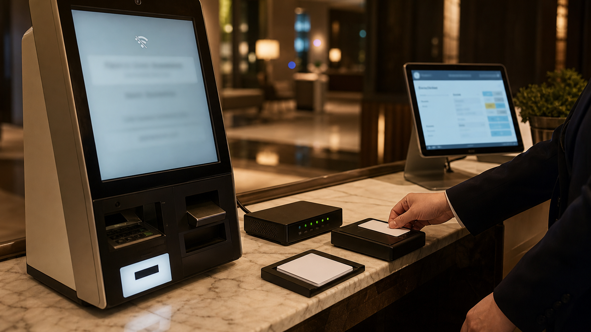
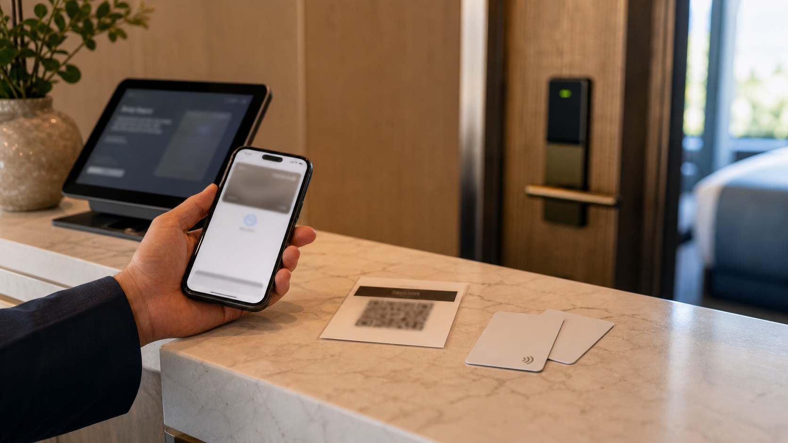
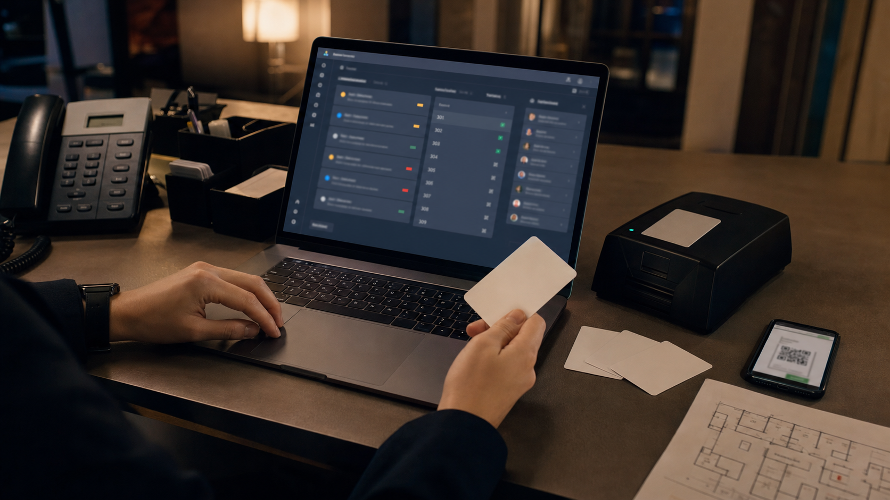
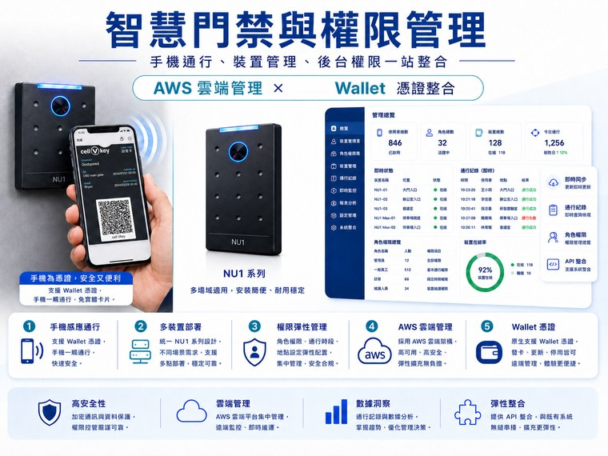
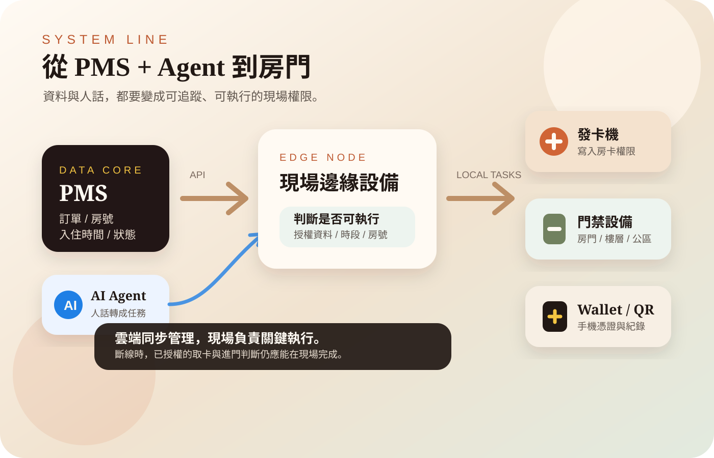

2026.07.30 / Published
Pre Check-in 不只是填表：身份、付款與房卡權限要怎麼先整理好？
Pre check-in 應該把旅客資料、付款授權、身份確認、房號分配與房卡權限先整理好，讓現場報到從資料輸入變成驗證與執行。
Signal & Style
觀察智慧旅宿、自助服務、IoT、通行管理、AI 客服與旅客體驗。
Articles
2026.07.30 / Published
Pre check-in 應該把旅客資料、付款授權、身份確認、房號分配與房卡權限先整理好，讓現場報到從資料輸入變成驗證與執行。

2026.07.24 / Published
智慧入住的安全感來自現場可執行。短暫斷網時，已授權的訂單、身份、付款與房卡權限應能透過邊緣設備完成驗證、發卡與基本紀錄。

2026.07.21 / Published
行動憑證普及後，實體房卡不會立刻消失。成熟的旅宿門禁設計，是讓多種憑證共用同一套 PMS 與權限資料，而不是逼所有旅客走同一條路。

2026.07.18 / Published
AI Agent 放進旅宿門禁時，重點不是讓它直接開門，而是讓它把自然語言需求轉成有時間、區域、身份、審核與撤回紀錄的通行任務。

2026.07.11 / Published
asmag 在 2026 年 7 月整理 mobile access control 的最新趨勢：手機憑證採用增加、Wallet 支援、強化身分驗證、實體與數位身份融合、雲端管理，以及多種通行方式共存。對旅宿來說，這不只是手機開門，而是要把旅客、PMS、Kiosk、Wallet、QR Code、NFC 房卡與門禁權限整理成同一套可管理流程。

2026.06.29 / Published
智慧入住真正困難的不是讓旅客按下 Check-in，而是讓 PMS 裡的訂單、房號、入住時間與權限，透過 AI Agent 與現場邊緣設備，正確交給發卡機、門禁設備與手機憑證。當資料、任務、判斷與執行能串成一條線，自助入住才會從漂亮介面變成可靠流程。

2026.06.26 / Published
Kiosk 的下一步，不是把櫃台變成螢幕，而是把旅客操作變成現場任務。當 Kiosk 能觸發 PMS 更新、發卡、Wallet / QR Code、門禁權限與櫃台通知，自助入住才真的進入可管理的流程。

2026.06.24 / Published
Pre check-in 的價值不是讓旅客提早填表，而是把訂單、身份、付款、金鑰與現場門禁權限先整理好，讓旅客到現場後只需要完成邊緣驗證與取卡。

2026.06.23 / Published
會員錢包的核心不是多一張手機會員卡，而是把發券、領券、核銷、會員點數與轉換紀錄接回後台，讓優惠券變成會員營運的一部分。

2026.06.23 / Published
大型場館智慧通行的核心，是讓 Wallet 票券、NFC/BLE、閘口設備、分區權限與邊緣驗證共同支撐高人流入場，而不是只把紙票換成 QR Code。

2026.06.23 / Published
PMS 接上自助 Kiosk 的重點，不只是把訂單顯示在螢幕上，而是讓旅客資料、付款狀態、房號、發卡、手機憑證與門禁權限變成一條可執行的現場流程。

2026.06.22 / Published
AI agent 接進旅宿 PMS 後，旅客的一句需求可以變成查訂單、確認房況、建立備註、發卡、開通門禁與通知現場人員的任務鏈，而不只是客服聊天。

2026.06.21 / Published
行動鑰匙與智慧門禁的選型，重點不只是品牌，而是 PMS 串接、現場斷網備援、門鎖改裝成本、旅客操作方式、安全維護與權限管理能不能接成一條穩定流程。

2026.06.21 / Published
對許多旅館與民宿來說，自助入住不一定要從大型 kiosk 開始。Cellbedell 以去中心化邊緣運算管理，讓 iPad、自助發卡機、手機金鑰與電子鎖節點協同完成入住流程。

2026.06.21 / Published
AI 訪客管理不只是登記姓名，而是把訪客、住客、員工與臨時通行權限變成可追蹤的流程，讓旅館、商辦與共享空間更容易管理前台與門禁。

2026.06.20 / Published
智慧入住的重點不只是少一個櫃台，而是用隨插即用架構、PMS API 串接、邊緣運算與斷網自主化，把旅客抵達前後的通行、付款與服務任務整理成更順的體驗。